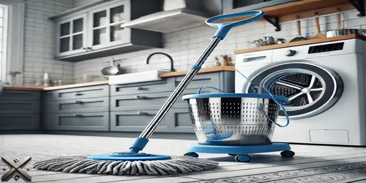
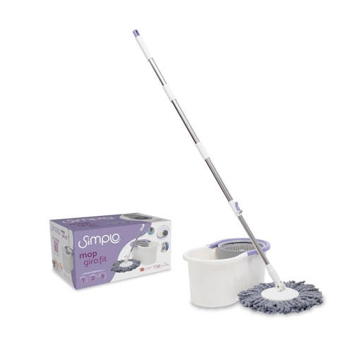
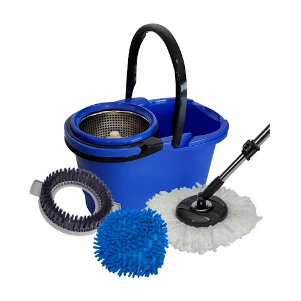
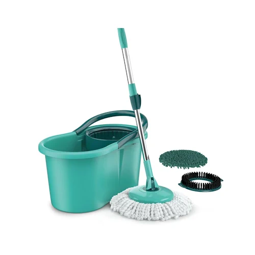
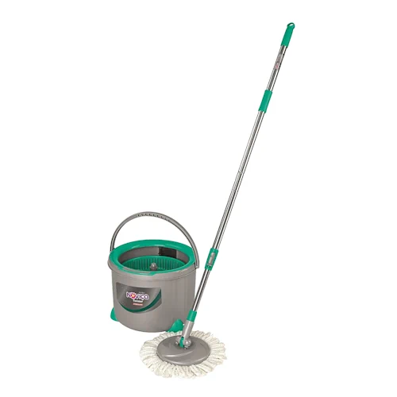
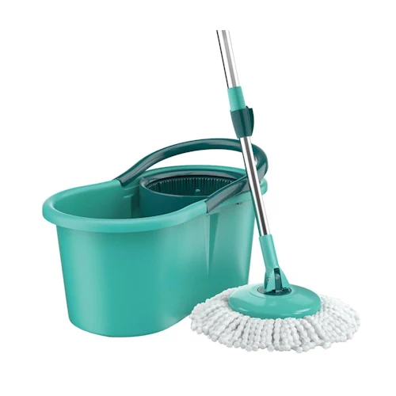

Esfregar o chão, torcer o pano e ainda acabar com um piso mal limpo é um problema comum. Felizmente, os mops giratórios surgiram para resolver essa questão, tornando a limpeza mais prática e eficiente. Selecionamos os cinco melhores mops giratórios de 2025 para ajudar você a fazer a melhor escolha!
Com designs ergonômicos e sistemas de torção eficientes, esses mops facilitam a remoção da sujeira sem esforço excessivo. Além disso, muitos modelos possuem reservatórios e cabeças giratórias que alcançam até os cantos mais difíceis. Confira nossa seleção e escolha o ideal para sua casa!

O mop giratório revolucionou a forma de limpar pisos, combinando tecnologia e praticidade para facilitar o dia a dia. Seu design inovador inclui um cabo ergonômico, um balde com sistema de rotação e um esfregão de microfibra altamente absorvente.
O grande destaque desse utensílio é o mecanismo giratório, que permite enxaguar e torcer o pano sem esforço, mantendo as mãos limpas e secas. Basta mergulhar o esfregão na solução de limpeza, posicioná-lo na centrífuga do balde e acionar o pedal ou pressionar o cabo para remover o excesso de água.
Graças à sua microfibra de alta performance, o mop captura poeira, cabelos e até partículas finas de sujeira, tornando-se uma excelente opção para alérgicos. Além disso, ele pode ser utilizado em diversos tipos de piso, como madeira, porcelanato, cerâmica e laminado, garantindo uma limpeza eficiente sem danificar as superfícies.
Com modelos ajustáveis, refis laváveis e rotação 360°, o mop giratório proporciona uma limpeza mais ágil, ergonômica e higiênica, reduzindo o contato com produtos químicos e eliminando o desconforto de torcer panos manualmente.

Se você busca um mop giratório funcional e acessível, o Simplo Fit é uma ótima opção. Indicado para pisos frios, sintéticos e de madeira, ele limpa com eficiência usando pouca água e produtos químicos. Seu balde compacto de 4L e alça facilitam o manuseio, enquanto o cabo ajustável em inox garante durabilidade. O refil de microfibra de alta absorção pode ser adquirido separadamente. Além disso, o sistema de centrifugação permite que o mop seque rapidamente, evitando excesso de umidade no chão. Com design leve e fácil de armazenar, é uma opção perfeita para quem tem pouco espaço e busca praticidade. Preço médio: R$ 69.

Para quem deseja um mop giratório com cesto em inox, o Perfect Pro 9723 é a escolha ideal. Seu cabo de 1,40m permite alcançar locais altos, facilitando a limpeza sem prejudicar a postura. As cerdas de microfibra absorvem líquidos rapidamente e não danificam superfícies delicadas, como porcelanatos. Além de pisos, pode ser usado para limpar janelas e móveis. Outro diferencial é o sistema de torção eficiente, que reduz o esforço necessário para secar o mop. Isso torna a limpeza menos cansativa e mais rápida. A base giratória permite movimentos suaves, proporcionando um acabamento impecável. Preço médio: entre R$ 153.

O Flash Limp 8258 substitui rodo e pano de chão, oferecendo três refis diferentes: um para limpeza pesada, um de microfibra e outro para remoção de poeira. Pode ser usado em diversos tipos de piso e vem com um balde de 12L. Ideal para quem quer mais praticidade na limpeza. Além disso, seu cabo ergonômico facilita o manuseio, evitando dores nas costas e garantindo maior conforto durante o uso. O sistema de rotação eficiente permite a remoção de excesso de água rapidamente, aumentando a eficiência do processo. Com um design moderno e robusto, é uma excelente escolha para quem busca versatilidade e durabilidade. Preço médio: R$ 91.

Projetado para apartamentos, o Noviça Anis oferece um sistema de torção eficiente e fios de microfibra que garantem máxima absorção. Seu design permite alcançar sujeiras difíceis e sua proteção antirrespingo evita manchas no piso. Funciona bem em pisos frios, sintéticos e de madeira. Além disso, seu balde foi desenvolvido para otimizar o uso da água, garantindo uma limpeza sustentável. Outro diferencial é sua resistência: fabricado com materiais duráveis, ele suporta o uso contínuo sem perder a eficiência. Com sua base flexível, o mop se ajusta a diferentes ângulos, facilitando a remoção de sujeira em cantos e sob móveis. Preço médio: entre R$ 186.

O grande destaque é o Flash Limp 8209, um mop giratório moderno e prático. Seu balde de 12L com alça facilita o transporte, e seu cabo telescópico de 129 cm garante conforto na limpeza. O refil de microfibra lavável adere à sujeira sem espalhá-la, tornando a limpeza mais eficiente. Além disso, o sistema de rotação foi aprimorado para proporcionar maior rapidez e eficácia na secagem do refil. Sua construção em aço inox garante maior resistência e vida útil prolongada. Esse modelo se destaca pela facilidade de uso e pela tecnologia de absorção, que reduz a necessidade de reaplicação de água e produtos de limpeza. Preço médio: R$ 103.
Escolher o mop giratório ideal depende das suas necessidades e do tipo de ambiente que deseja manter limpo. Se busca um modelo acessível e eficiente, o Simplo Fit é uma excelente opção. Já para quem quer mais versatilidade e um acabamento profissional, o Perfect Pro 9723 se destaca. O Flash Limp 8258 é ideal para quem quer um equipamento 3 em 1, enquanto o Noviça Anis atende perfeitamente quem mora em apartamentos e precisa de um utensílio compacto e eficaz. No topo da lista, o Flash Limp 8209 se sobressai pelo custo-benefício, oferecendo eficiência e praticidade para diferentes superfícies.
Independente do modelo escolhido, um bom mop giratório pode facilitar muito sua rotina de limpeza, tornando-a mais rápida e eficiente. Investir em um utensílio de qualidade significa menos esforço e um ambiente mais higienizado. Avalie suas prioridades, considere os diferenciais de cada modelo e escolha o mop que melhor atenda às suas expectativas. Agora, conte para nós: qual desses modelos chamou mais sua atenção? Deixe seu comentário e compartilhe este artigo com quem também está em busca do melhor mop giratório de 2025!